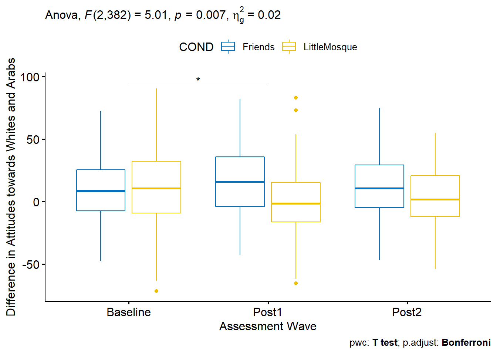
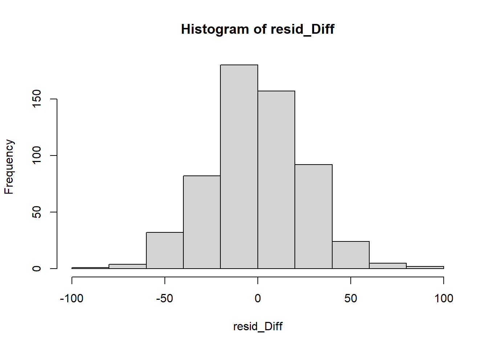

Chapter 10 Mixed Design ANOVA
The focus of this lecture is mixed design ANOVA. That is, we are conducting a two-way ANOVA where one of the factors is repeated measures and one of the factors is between groups. The mixed design ANOVA is often associated with the random clinical trial (RCT) where the researcher hopes for a significant interaction effect. Specifically, the researcher hopes that the individuals who were randomly assigned to the treatment condition improve from pre-test to post-test and maintain (or continue to improve) after post-test, while the people assigned to the no-treatment control are not statistically significantly different from treatment group at pre-test, and do not improve over time.
10.2 Introducing Mixed Design ANOVA
Mixed design ANOVA is characterized by the following:
- at least two independent variables.
- Termed “mixed” because
- one is a between-subjects factor, and
- one is a repeated-measures (i.e., within-subjects) factor.
- In essence, we are simultaneously conducting
- a one-way independent ANOVA and a
- a one-way repeated-measures ANOVA.
Especially when there is a significant interaction there can be numerous ways to follow up. We will work one set of analyses: simple main effects (condition within wave; wave within condition) and, when needed, conduct posthoc pairwise comparisons as follow-up. Other good options include identifying a priori contrasts and conducting polynomials (not demonstrated in this lecture).

Image of a workflow for mixed design ANOVA
The steps in working the mixed design generally include,
- Exploring the data/evaluating the assumptions
- Evaluating the omnibus test
- Follow-up to the omnibus
- if significant interaction effect: simple main effects and further follow-up to those
- if significant main effect (but no significant interaction effect), identify source of significance in the main effect
- if no significance, stop
- Write it up with tables, figure(s)
Assumptions for the mixed design ANOVA include the following:
- The dependent variable should be continuous with no significant outliers in any cell of the design
- Check by visualizing the data using box plots and by using the rstatix::identify_outliers() function
- The DV should be approximately normally distributed in each cell of the design
- Check with Shapiro-Wilk normality test rstatix::shapiro_test() function and with visual inspection by creating Q-Q plots. The ggpubr::ggqqplot() function is a great tool.
- The variances of the differences between groups should be equal. This is termed the sphericity assumption. This can be checked with Mauchly’s test of sphericity, which is reported automatically in the rstatix::anova_test() output.
The best way to address violations of these assumptions is not always clear. Possible solutions include:
- For 2- and 3- way ANOVAs, violations of the normality assumption might be addressed by removing extreme outliers or considering transformations of the data. Transformations, though, introduce their own compexities regarding interpretation. Kline’s text (2016) provides excellent coverage of options.
- A robust ANOVA option is available in the WRS2 package
- If there are three or more waves/conditions and the sample is large, it may be possible to run a multi-level, model.
- In the absence of alternatives, it may be necessary to run the mixed design with the violated assumptions, but report them.
- ….and more. Internet searches continue to offer new approaches and alternatives.
10.3 Research Vignette
This lesson’s research vignette is from Murrar and Brauer’s (2018) article that describes the results of two studies that evaluated interventions designed to reduce prejudice against Arabs/Muslims. We are working only a portion of the first study reported in the article. Participants (N = 193), all who were White, were randomly assigned to one of two conditions where they watched six episodes of the sitcom Friends or Little Mosque on the Prairie. The sitcoms and specific episodes were selected after significant pilot testing. The selection was based on the tension selecting stimuli that were as similar as possible, yet the intervention-oriented sitcom needed to invoke psychological processes known to reduce prejudice. The authors felt that both series had characters that were likable and relatable and were engaged in regular activities of daily living. The Friends series featured characters who were predominantly White, cis-gendered, and straight. The Little Mosque series portrayed the experience of Western Muslims and Arabs as they lived in a small Canadian town. This study involved assessment across three waves: baseline (before watching the assigned episodes), post1 (immediately after watching the episodes), and post2 (completed 4-6 weeks after watching the episodes).
The study used feelings and liking thermometers, rating their feelings and liking toward 10 different groups of people on a 0 to 100 sliding scale (with higher scores reflecting greater liking and positive feelings). For the purpose of this analysis, the ratings of attitudes toward White people and attitudes toward Arabs/Muslims were used. A third metric was introduced by subtracting the attitudes towards Arabs/Muslims from the attitudes toward Whites. Higher scores indicated more positive attitudes toward Whites where as low scores indicated no difference in attitudes. To recap, there were three potential dependent variables, all continuously scaled:
- AttWhite: attitudes toward White people; higher scores reflect greater liking
- AttArab: attitudes toward Arab people; higher scores reflect greater liking
- Diff: the difference between AttWhite and AttArab; higher scores reflect a greater liking for White people
With random assignment, nearly equal cell sizes, a condition with two levels (Friends, Little Mosque), and three waves (baseline, post1, post2), this is perfect for mixed design ANOVA.

Image of the design for the Murrar and Brauer (2018) study
10.3.1 Simulating the data from the journal article
Below is the code I have used to simulate the data. The simulation includes two dependent variables (AttWhite, AttArab), Wave (baseline, post1, post2), and COND (condition; Friends, Little_Mosque). There is also a caseID (repeated three times across the three waves) and rowID (giving each observation within each case an ID). This creates the long-file, where each person has 3 rows of data representing baseline, post1, and post2. You can use this simulation for two of the three practice suggestions.
library(tidyverse)
# change this to any different number (and rerun the simulation) to
# rework the chapter problem
set.seed(210813)
AttWhite <- round(c(rnorm(98, mean = 76.79, sd = 18.55), rnorm(95, mean = 75.37,
sd = 18.99), rnorm(98, mean = 77.47, sd = 18.95), rnorm(95, mean = 75.81,
sd = 19.29), rnorm(98, mean = 77.79, sd = 17.25), rnorm(95, mean = 75.89,
sd = 19.44)), 3) #sample size, M and SD for each cell; this will put it in a long file
# set upper bound for variable
AttWhite[AttWhite > 100] <- 100
# set lower bound for variable
AttWhite[AttWhite < 0] <- 0
AttArab <- round(c(rnorm(98, mean = 64.11, sd = 20.97), rnorm(95, mean = 64.37,
sd = 20.03), rnorm(98, mean = 64.16, sd = 21.64), rnorm(95, mean = 70.52,
sd = 18.55), rnorm(98, mean = 65.29, sd = 19.76), rnorm(95, mean = 70.3,
sd = 17.98)), 3)
# set upper bound for variable
AttArab[AttArab > 100] <- 100
# set lower bound for variable
AttArab[AttArab < 0] <- 0
rowID <- factor(seq(1, 579))
caseID <- rep((1:193), 3)
Wave <- c(rep("Baseline", 193), rep("Post1", 193), rep("Post2", 193))
COND <- c(rep("Friends", 98), rep("LittleMosque", 95), rep("Friends", 98),
rep("LittleMosque", 95), rep("Friends", 98), rep("LittleMosque", 95))
# groups the 3 variables into a single df: ID#, DV, condition
Murrar_df <- data.frame(rowID, caseID, Wave, COND, AttArab, AttWhite)Let’s check the structure. We want
- rowID and caseID to be unordered factors
- Wave and COND to be ordered factors
- AttArab and AttWhite to be numerical
str(Murrar_df)'data.frame': 579 obs. of 6 variables:
$ rowID : Factor w/ 579 levels "1","2","3","4",..: 1 2 3 4 5 6 7 8 9 10 ...
$ caseID : int 1 2 3 4 5 6 7 8 9 10 ...
$ Wave : chr "Baseline" "Baseline" "Baseline" "Baseline" ...
$ COND : chr "Friends" "Friends" "Friends" "Friends" ...
$ AttArab : num 74.3 55.8 33.3 66.3 71 ...
$ AttWhite: num 100 79 75.9 68.2 100 ...The script below changes
- caseID from integer to factor
- Wave and COND from factor to ordered factors
- It makes sense to order Friends and LittleMosque, since we believe that LittleMosque contains prejudice-reducing properties
# make caseID a factor
Murrar_df[, "caseID"] <- as.factor(Murrar_df[, "caseID"])
# make Wave an ordered factor
Murrar_df$Wave <- factor(Murrar_df$Wave, levels = c("Baseline", "Post1",
"Post2"))
# make COND an ordered factor
Murrar_df$COND <- factor(Murrar_df$COND, levels = c("Friends", "LittleMosque"))Let’s check the structure again.
str(Murrar_df)'data.frame': 579 obs. of 6 variables:
$ rowID : Factor w/ 579 levels "1","2","3","4",..: 1 2 3 4 5 6 7 8 9 10 ...
$ caseID : Factor w/ 193 levels "1","2","3","4",..: 1 2 3 4 5 6 7 8 9 10 ...
$ Wave : Factor w/ 3 levels "Baseline","Post1",..: 1 1 1 1 1 1 1 1 1 1 ...
$ COND : Factor w/ 2 levels "Friends","LittleMosque": 1 1 1 1 1 1 1 1 1 1 ...
$ AttArab : num 74.3 55.8 33.3 66.3 71 ...
$ AttWhite: num 100 79 75.9 68.2 100 ...A key dependent variable in the Murrar and Brauer (Murrar & Brauer, 2018) article is attitude difference. Specifically, the attitudes toward Arabs score was subtracted from the attitudes toward Whites scores. Higher attitude difference indicate a greater preference for Whites. Let’s create that variable, here.
Murrar_df$Diff <- Murrar_df$AttWhite - Murrar_df$AttArabThe code for the .rds file will retain the formatting of the variables, but is not easy to view outside of R. This is what I would do.
# to save the df as an .rds (think 'R object') file on your computer;
# it should save in the same file as the .rmd file you are working
# with saveRDS(Murrar_df, 'Murrar_RDS.rds') bring back the simulated
# dat from an .rds file Murrar_df <- readRDS('Murrar_RDS.rds')If you want to export this data as a file to your computer, remove the hashtags to save it (and re-import it) as a .csv (“Excel lite”) or .rds (R object) file. This is not a necessary step.
The code for .csv will likely lose the formatting (i.e., stripping Wave and COND of their ordered factors), but it is easy to view in Excel.
# write the simulated data as a .csv write.table(Murrar_df,
# file='DiffCSV.csv', sep=',', col.names=TRUE, row.names=FALSE) bring
# back the simulated dat from a .csv file Murrar_df <- read.csv
# ('DiffCSV.csv', header = TRUE)10.4 Working the Mixed Design ANOVA with R packages
10.4.1 Exploring data and testing assumptions
We begin the 2x3 mixed design ANOVA with a preliminary exploration of the data and testing of the assumptions. Here’s where we are on the workflow:
Image of the workflow showing that we are on the “Evaluating assumptions” portion
First, let’s examine the overal descriptive statistics.
psych::describe(Murrar_df) vars n mean sd median trimmed mad min max range
rowID* 1 579 290.00 167.29 290.00 290.00 214.98 1.00 579.00 578.00
caseID* 2 579 97.00 55.76 97.00 97.00 71.16 1.00 193.00 192.00
Wave* 3 579 2.00 0.82 2.00 2.00 1.48 1.00 3.00 2.00
COND* 4 579 1.49 0.50 1.00 1.49 0.00 1.00 2.00 1.00
AttArab 5 579 66.84 19.75 68.04 67.64 20.38 6.14 100.00 93.86
AttWhite 6 579 75.31 17.02 76.72 76.19 18.50 23.03 100.00 76.97
Diff 7 579 8.47 26.33 8.65 8.50 25.73 -71.51 90.74 162.25
skew kurtosis se
rowID* 0.00 -1.21 6.95
caseID* 0.00 -1.21 2.32
Wave* 0.00 -1.51 0.03
COND* 0.03 -2.00 0.02
AttArab -0.39 -0.16 0.82
AttWhite -0.37 -0.51 0.71
Diff 0.03 0.00 1.09Our analysis will use the difference score (Diff) as the dependent variable. Let’s look at this variable in its combinations of wave and condition.
psych::describeBy(Diff ~ Wave + COND, data = Murrar_df, mat = TRUE) item group1 group2 vars n mean sd median trimmed
Diff1 1 Baseline Friends 1 98 9.3064898 23.90867 8.804 8.9906625
Diff2 2 Post1 Friends 1 98 15.9261327 26.41789 16.191 16.2309375
Diff3 3 Post2 Friends 1 98 11.9540102 23.33602 10.882 11.8340000
Diff4 4 Baseline LittleMosque 1 95 9.7331158 30.51895 10.797 10.5544156
Diff5 5 Post1 LittleMosque 1 95 -0.1486632 26.96858 -1.280 -0.9402727
Diff6 6 Post2 LittleMosque 1 95 3.6704737 23.66524 1.860 3.7857403
mad min max range skew kurtosis se
Diff1 24.48143 -47.342 72.565 119.907 0.17600603 -0.35619536 2.415140
Diff2 29.77135 -42.598 82.288 124.886 -0.04613379 -0.57456759 2.668609
Diff3 24.59189 -46.528 75.014 121.542 0.13240007 0.06485450 2.357294
Diff4 30.90480 -71.510 90.737 162.247 -0.20135358 -0.03033805 3.131178
Diff5 23.93213 -65.259 83.367 148.626 0.32819576 0.54919109 2.766918
Diff6 25.26054 -53.856 55.264 109.120 -0.06475209 -0.42366384 2.428002# Note. Recently my students and I have been having intermittent
# struggles with the describeBy function in the psych package. We
# have noticed that it is problematic when using .rds files and when
# using data directly imported from Qualtrics. If you are having
# similar difficulties, try uploading the .csv file and making the
# appropriate formatting changes.First we inspect the means. We see that the baseline scores for the Friends and Little Mosque conditions are similar. However, the post1 and post2 difference scores (i.e., difference in attitudes toward White and Arab individuals, where higher scores indicate more favorable ratings of White individuals) are higher in the Friends condition than in the Little Mosque condition.
10.4.1.1 Assumption of Normality
We can use this output to evaluate the distributional characteristics of the dependent variable. Recall that mixed design ANOVA assumes a normal distribution.
Our values of skew and kurtosis are well within the limits (Kline, 2016) of a normal distribution.
- skew: < 3; the highest skew value in our data is 0.32
- kurtosis: extreme values are between 8 and 20; the highest kurtosis value in our data is .55
The boxplot is one common way for identifying outliers. The boxplot uses the median and the lower (25th percentile) and upper (75th percentile) quartiles. The difference bewteen Q3 and Q1 is the interquartile range (IQR).
You’ll notice that as we are creating these boxplors we are saving them as objects. This is not necessary to produce the graph. However, we will combine the object with other data, later, to embed results if the anlaysis in our figures.
CNDwiWV <- ggpubr::ggboxplot(Murrar_df, x = "Wave", y = "Diff", color = "COND",
palette = "jco", xlab = "Assessment Wave", ylab = "Difference in Attitudes towards Whites and Arabs",
)
CNDwiWV The distributions look relatively normal with the mean well-centered. Given that we simulated the data from means and standard deviations, this is somewhat expected. This boxplot also provides a glimpse of the patterns in our data. That is, the means are quite similar at baseline; in the post intervention waves we see greater difference scores for the Friends condition.
The distributions look relatively normal with the mean well-centered. Given that we simulated the data from means and standard deviations, this is somewhat expected. This boxplot also provides a glimpse of the patterns in our data. That is, the means are quite similar at baseline; in the post intervention waves we see greater difference scores for the Friends condition.
Let’s reconfigure the data by putting the wave on the X axis. Plotting it both ways (i.e.,swapping roles of predictor and moderator) can help us get a sense of what is happening.
WVwiCND <- ggpubr::ggboxplot(Murrar_df, x = "COND", y = "Diff", color = "Wave",
palette = "jco", xlab = "Treatment Condition", ylab = "Difference in Attitudes towards Whites and Arabs")
WVwiCND Outliers are generally identified when values fall outside these lower and upper boundaries. In the short formulas below, IQR is the interquartile range (i.e., the middle 50%, the distance of the box):
Outliers are generally identified when values fall outside these lower and upper boundaries. In the short formulas below, IQR is the interquartile range (i.e., the middle 50%, the distance of the box):
- Q1 - 1.5xIQR
- Q3 + 1.5xIQR
Extreme values occur when values fall outside these boundaries:
- Q1 - 3xIQR
- Q3 + 3xIQR
Using the rstatix::identify_outliers function we can look for outliers in the dependent variable, doubly grouped by our predictor variables.
Murrar_df %>%
group_by(Wave, COND) %>%
rstatix::identify_outliers(Diff)# A tibble: 4 x 9
Wave COND rowID caseID AttArab AttWhite Diff is.outlier is.extreme
<fct> <fct> <fct> <fct> <dbl> <dbl> <dbl> <lgl> <lgl>
1 Baseline LittleMosq~ 107 107 100 28.5 -71.5 TRUE FALSE
2 Post1 LittleMosq~ 297 104 16.6 100 83.4 TRUE FALSE
3 Post1 LittleMosq~ 315 122 26.8 100 73.2 TRUE FALSE
4 Post1 LittleMosq~ 337 144 97.4 32.2 -65.3 TRUE FALSE While we have some outliers (where “is.outlier” = “TRUE”), none are extreme (where “is.outlier” = “FALSE”). We’ll keep these in mind as we continue to evaluate the data.
If I had extreme outliers, I would individually inspect them. Especially if something looked awry (e.g., erratic responding extreme scores across variables) I might consider deleting them.
Next we can use the rstatix::shapiro_test() to see if any of the distributions of the dependent variable (Diff) within each wave-by-condition combinations differs significantly from a normal distribution.
Murrar_df %>%
group_by(Wave, COND) %>%
rstatix::shapiro_test(Diff)# A tibble: 6 x 5
Wave COND variable statistic p
<fct> <fct> <chr> <dbl> <dbl>
1 Baseline Friends Diff 0.993 0.915
2 Baseline LittleMosque Diff 0.993 0.923
3 Post1 Friends Diff 0.992 0.798
4 Post1 LittleMosque Diff 0.986 0.437
5 Post2 Friends Diff 0.990 0.708
6 Post2 LittleMosque Diff 0.991 0.762The Shapiro Wilks test suggests that distribution in each of our cells is not significantly different than normal. We can further visualize this with QQ plots.
ggpubr::ggqqplot(Murrar_df, "Diff", ggtheme = theme_bw()) + facet_grid(Wave ~
COND)
10.4.1.2 Homogeneity of variance assumption
Because there is a between-subjects variable, we need need to evaluate the homogeneity of variance assumption. As before, we can use the Levene’s test with the rstatix::levene_test() function. Considering each of the comparisons of condition within wave, there is no instance where we violate the assumption.
Murrar_df %>%
group_by(Wave) %>%
rstatix::levene_test(Diff ~ COND)# A tibble: 3 x 5
Wave df1 df2 statistic p
<fct> <int> <int> <dbl> <dbl>
1 Baseline 1 191 3.97 0.0477
2 Post1 1 191 0.141 0.708
3 Post2 1 191 0.107 0.744 Levene’s test indicated a violation of this assumption between the Friends and Little Mosque conditions at baseline (F [1, 191] = 3.973, p = .047). However, there was no indication of assumption violation at post1 (F [1, 191] = 0.141, p = .708), and post2 (F [1, 191] = 0.107, p = .743) waves of the design.
10.4.1.3 Assumption of homogeneity of covariance matrices
In this multivariate sample, the Box’s M test evaluates if two or more covariance matrices are homogeneous. Like other tests of assumptions, we want a non-significant test result (i.e., where p > .05). Box’s M has some disavantages. Box’s M has low power in small sample sizes and is overly sensitive in large sample sizes. We would unlikely make a decision about our data with Box’s M alone. Rather, we consider it along with our dashboard of diagnostic screeners.
rstatix::box_m(Murrar_df[, "Diff", drop = FALSE], Murrar_df$COND)# A tibble: 1 x 4
statistic p.value parameter method
<dbl> <dbl> <dbl> <chr>
1 3.21 0.0732 1 Box's M-test for Homogeneity of Covariance Matric~None-the-less, Box’s M indicated no violation of the homogeneity of covariance matrices assumption (M = 3.209, p = .073)
10.4.1.4 APA style writeup of assumptions
At this stage we are ready to draft the portion of the APA style writeup that evaluates the assumptions.
Mixed design ANOVA has a number of assumptions related to both the within-subjects and between-subjects elements. Data are expected to be normally distributed at each level of design. Visual inspection of boxplots for each wave of the design, assisted by the rstatix::identify_outliers() function (which reports values above Q3 + 1.5xIQR or below Q1 - 1.5xIQR, where IQR is the interquartile range) indicated some outliers, but none at the extreme level. There was no evidence of skew (all values were at or below the absolute value of 0.32) or kurtosis (all values were below the absolute value of .57; (Kline, 2016)). Additionally, the Shapiro-Wilk tests applied at each level of the design were non-significant. Because of the between-subjects aspect of the design, the homogeneity of variance assumption was evaluated. Levene’s test indicated a violation of this assumption between the Friends and Little Mosque conditions at baseline F [1, 191] = 3.973, p = .047). However, there was no indication of assumption violation at post1 (F [1, 191] = 0.141, p = .708), and post2 (F [1, 191] = 0.107, p = .743) waves of the design. Further, Box’s M-test (M = 3.209, p = .073) indicated no violation of the homogeneity of covariance matrices. LATER WE WILL ADD INFORMATION ABOUT THE SPHERICITY ASSUMPTION.
10.4.2 Omnibus ANOVA
Having evaluated the assumptions (excepting sphericity) we are ready to move to the evaluation of the omnibus ANOVA. This next step produces both the omnibus test as well as testing the sphericity assumption. Conceptually, evaluating the sphericity assumption precedes the omnibus; procedurally these are evaluated simultaneously. The figure also reflects that decisions related to follow-up are dependent upon the significance of the main and omnibus effects.

Image of the workflow showing that we at the “Compute the Omnibus ANOVA” step
The rstatix package is a wrapper for the car package. Authors of wrappers attempt to streamline a more complex program to simplify the input needed and maximize the output produced for the typical use-cases.
If we are ever confused about a function, we can place a question mark in front of it. It will summons information and, if the package is in our library, let us know to which package it belongs and open the instructions that are embedded in R/R Studio.
#?anova_testIn the code below the identification of the data, DV, between, and within variables are likely to be intuitive. The within-subjects identifier (wid) is the person-level ID that assists the statistic in controlling for the dependency introduced by the repeated-measures factor.
# Murrar_df is our df, Diff is our df, wid is the caseID between is
# the between-subjects variable, within is the within subjects
# variable
Diff_2way <- rstatix::anova_test(data = Murrar_df, dv = Diff, wid = caseID,
between = COND, within = Wave)
Diff_2wayANOVA Table (type III tests)
$ANOVA
Effect DFn DFd F p p<.05 ges
1 COND 1 191 13.149 0.000369 * 0.023000
2 Wave 2 382 0.273 0.761000 0.000933
3 COND:Wave 2 382 5.008 0.007000 * 0.017000
$`Mauchly's Test for Sphericity`
Effect W p p<.05
1 Wave 0.99 0.369
2 COND:Wave 0.99 0.369
$`Sphericity Corrections`
Effect GGe DF[GG] p[GG] p[GG]<.05 HFe DF[HF] p[HF] p[HF]<.05
1 Wave 0.99 1.98, 378.06 0.759 1 2, 382 0.761
2 COND:Wave 0.99 1.98, 378.06 0.007 * 1 2, 382 0.007 *10.4.2.1 Checking the sphericity assumption
First, we check Mauchly’s test for the main and interaction effects that involve the repeated measures variable.
- main effect for Wave: W = .99, p = .369
- main effect for Wave: W = .99, p = .369
We will be able to add this statement to our assumptions write-up:
Mauchly’s test indicated no violation of the sphericity assumption for the main effect (W = 0.99, p = .369) and interaction effect (W = 0.99, p = .369).
If the p vaue associated with Mauchly’s test had been less than .05, we could have used one of the two options (Greenhouse Geyser/GGe or Huynh-Feldt/HFe). In each of these an epsilon value provides an adjustment to the degrees of freedom used in the estimation of the p value. There is also an option to use a multivariate approach when ANOVA designs include a repeated measures factor.
Omnibus Results
Results of the omnibus ANOVA indicated a significant main effect for condition (F[1, 191] = 13.149, p < .001, \(\eta^{2}\) = 0.023), a non-significant main effect for wave (F[2, 382] = 0.273, p = .761, \(\eta^{2}\) = 0.001), and a significant interaction effect (F[2, 382] = 5.008, p = 0.007, \(\eta^{2}\) = 0.017). We note that according to Cohen et al.’s (Cohen et al., 2003) guidelines, the effect size for the interaction term is small.
In the output, the column labeled “ges” provides the value for the effect size, \(\eta^{2}\). Recall that eta-squared is one of the most commonly used measures of effect. It refers to the proportion of variability in the dependent variable/outcome that can be explained in terms of the independent variable/predictor. Conventionally, values of .01, .06, and .14 are considered to be small, medium, and large effect sizes, respectively.
You may see different values (.02, .13, .26) offered as small, medium, and large – these values are used when multiple regression is used. A useful summary of effect sizes, guide to interpreting their magnitudes, and common usage can be found here (Watson, 2020).
With a significant interaction effect, we would focus on interpreting one or both of the simple main effects. Let’s first look at the simple main effect of condition within wave option.
10.4.3 Simple main effect of condition within wave
The figure reflects our path in the workflow. In the presence of a significant interaction effect we could choose from a variety of follow-up tests.

Image of the workflow showing that we are at the “Simple Main Effects for Factor A within all levels of Factor B” step
If we take this option we follow up with 3 one-way ANOVAs. When we look at condition within wave, our ANOVAs will look like this:
- comparison of Friends and Little Mosque within the baseline wave
- comparison of Friends and Little Mosque within the post1 wave
- comparison of Friends and Little Mosque within the post2 wave
# crate an object to hold the output the group_by function is what
# results in three, one-way ANOVAs for each of the waves, separately
# the between = Cond means that each level of cond will be compared
# method - 'bonferroni' gets us both the standard and adjusted p
# values
SimpleWave <- Murrar_df %>%
group_by(Wave) %>%
rstatix::anova_test(dv = Diff, wid = caseID, between = COND) %>%
rstatix::get_anova_table() %>%
rstatix::adjust_pvalue(method = "bonferroni")Coefficient covariances computed by hccm()
Coefficient covariances computed by hccm()
Coefficient covariances computed by hccm()SimpleWave# A tibble: 3 x 9
Wave Effect DFn DFd F p `p<.05` ges p.adj
* <fct> <chr> <dbl> <dbl> <dbl> <dbl> <chr> <dbl> <dbl>
1 Baseline COND 1 191 0.012 0.914 "" 0.0000614 1
2 Post1 COND 1 191 17.5 0.0000438 "*" 0.084 0.000131
3 Post2 COND 1 191 5.99 0.015 "*" 0.03 0.045 In prior lectures we have adjusted the p value against which we compare the resulting p value. When we specify “bonferroni” on the adjust_pvalue() command, the algorithm adjusts the reported p value for us. We can see the unadjusted p value in the “p p<.05” column and the Bonferroni adjustment in the “p.adj” column.
I think that it will be easiest for us to interpret this simple main effect as the traditional p < .05 and then apply the restrictions to the alpha at the next level of analysis. In this particular instance, we would have statistically significant differences somewhere between the Friends and Little Mosque conditions for both the Post (p = .027) and Post2 (p = .010) waves.
F strings:
- Pre: F (1, 191) = 0.012, p = .914, \(\eta^{2}\) = 0.000 (the effect size is zero)
- Post: F (1, 191) = 17.497, p < .001, \(\eta^{2}\) = 0.084 (a moderate effect size)
- Post2: F (1, 191) = 5.994, p = .015, \(\eta^{2}\) = 0.030 (a small effect size)
Recall, interpretation for the eta-squared are .01 ~ small, .06 ~ medium, and >.14 ~ large
Because there are only two levels (Friends, Little Mosque) within each wave (baseline, post1, post2), this simple effects analysis is complete with the three pairwise comparisons.
As always, we have several choices about how to manage Type I error. In a circumstance when the analysis of simple main effects (condition within wave) includes only three pairwise comparisons, we can use the LSD method (Green & Salkind, 2014b). This means that we can we can leave the alpha at 0.05. If we were to use a traditional Bonferroni, we would use \(\alpha\) = .017 (.05/3). Although the more restrictive Bonferroni criteria comes close, in both cases we would still have one non-significant(baseline) and two significant (post1, post2) simple main effects.
.05/3[1] 0.01666667If we were to write up this result:
We followed the significant interaction effect with an evaluation of simple main effects of condition within wave. Because there were only three comparisons following the omnibus evaluation, we used the LSD method to control for Type I error and left the alpha at .05 (Green & Salkind, 2014b). There was a non-statistically significant difference between conditions at baseline: F (1, 191) = 0.012, p = .914, \(\eta^{2}\) = 0.000. However other were statistically significant differences at post1 (F [1, 191] = 17.497, p < .001, \(\eta^{2}\) = 0.084) and post2 (F[1, 191] = 5.994, p = .015, \(\eta^{2}\) = 0.030). We note that the effect size at post1 approached a moderate size; the effect size at post2 was small.
10.4.4 Simple main effect of wave within condition
Alternatively, we could evaluate the simple main effect of wave within condition. The figure reflects our path along the workflow.

Image of the workflow showing that we at the “Simple Main Effects for Factor B within all levels of Factor A” step
If we conducted this alternative we would start with three one-way ANOVAs and then follow each of those with pairwise comparisons. First, the one-way repeated measures ANOVAs:
- comparison of baseline, post1, and post2 within the Friends condition
- comparison of baseline, post1, and post2 within the Little Mosque condition
SimpleCond <- Murrar_df %>%
group_by(COND) %>%
rstatix::anova_test(dv = Diff, wid = caseID, within = Wave) %>%
rstatix::get_anova_table() %>%
rstatix::adjust_pvalue(method = "bonferroni")
SimpleCond# A tibble: 2 x 9
COND Effect DFn DFd F p `p<.05` ges p.adj
<fct> <chr> <dbl> <dbl> <dbl> <dbl> <chr> <dbl> <dbl>
1 Friends Wave 2 194 1.76 0.175 "" 0.012 0.35
2 LittleMosque Wave 2 188 3.39 0.036 "*" 0.022 0.072Below are the F strings for the one-way ANOVAs the followed the omnibus, mixed design, ANOVA:
- Friends: F (2, 194) = 1.759, p = 0.175, \(\eta^{2}\) = 0.012 (effect size indicates no relationship)
- Little Mosque: F (2, 188) = 3.392, p = 0.036, \(\eta^{2}\) = 0.072 (a moderate effect size)
Because each of these one-way ANOVAs has three levels, we need to follow with pairwise comparisons. However, we only need to conduct them for the Little Mosque condition. As you can see we generally work our way down to comparing chunks to each other to find the source(s) of significant differences.
You will notice that we are saving the results of the pairwise comparisons as an object. This is not necessary, however we can use this object in combination with the boxplot we created earlier to embed results of our analysis in the resulting figure.
pwcWVwiGP <- Murrar_df %>%
group_by(COND) %>%
rstatix::pairwise_t_test(Diff ~ Wave, paired = TRUE, detailed = TRUE,
p.adjust.method = "bonferroni") #%>%
# select(-df, -statistic, -p) # Remove details
pwcWVwiGP# A tibble: 6 x 16
COND estimate .y. group1 group2 n1 n2 statistic p df conf.low
* <fct> <dbl> <chr> <chr> <chr> <int> <int> <dbl> <dbl> <dbl> <dbl>
1 Frien~ -6.62 Diff Basel~ Post1 98 98 -1.80 0.075 97 -13.9
2 Frien~ -2.65 Diff Basel~ Post2 98 98 -0.793 0.43 97 -9.27
3 Frien~ 3.97 Diff Post1 Post2 98 98 1.09 0.276 97 -3.23
4 Littl~ 9.88 Diff Basel~ Post1 95 95 2.45 0.016 94 1.86
5 Littl~ 6.06 Diff Basel~ Post2 95 95 1.62 0.108 94 -1.36
6 Littl~ -3.82 Diff Post1 Post2 95 95 -1.03 0.304 94 -11.2
# ... with 5 more variables: conf.high <dbl>, method <chr>, alternative <chr>,
# p.adj <dbl>, p.adj.signif <chr>At this point, we likely need to control for Type I error. Why? We have already conducted two one-way ANOVAs after the omnibus. Now we will conduct three more pairwise comparisons in the Little Mosque condition. I would divide .05/3 and interpret these pairwise comparisons with an alpha of .017.
We find a significant difference between baseline and post1 (t[95] = 2.447, p = .016), but non-significant differences between baseline and post2 (t[95] = 1.621, p = .108) and post1 and post2 (t[95] = -1.034, p = .304)
If we were to write up this result:
We followed the significant interaction effect with an evaluation of simple main effects of wave within condition. There were non-significant difference within the the Friends condition (F [2, 194] = 1.759, p = 0.175, \(\eta^{2}\) = 0.012). There were significant differences with an effect size indicating a small-to-moderate effect in the Little Mosque condition (F [2, 188] = 3.392, p = 0.036, \(\eta^{2}\) = 0.072). We followed up the significant simple main effect for the Little Mosque condition with pairwiwse comparisons. At this level we controlled for Type I error by dividing alpha (.05) by the number of paired comparisons (3). We found a significant difference between baseline and post1 (t[95] = 2.447, p = .016), but non-significant differences between baseline and post2 (t[95] = 1.621, p = .108) and post1 and post2 (t[95] = -1.034, p = .304).
10.4.5 If we only had a main effect
When there is an interaction effect, we do not interpret main effects. This is because the solution is more complicated than a main effect could explain. It is important, though, to know how to interpret a main effect. We would do this if we had one or more significant main effects and no interaction effect.
The figure shows our place on the workflow.

Image of a workflow showing that we at the “Main effects only” step
If we had not had a significant interaction, but did have a significant main effect for wave, we could have conducted pairwise comparisons for pre, post1, and post2 – collapsing across condition.
Murrar_df %>%
rstatix::pairwise_t_test(Diff ~ Wave, paired = TRUE, p.adjust.method = "bonferroni")# A tibble: 3 x 10
.y. group1 group2 n1 n2 statistic df p p.adj p.adj.signif
* <chr> <chr> <chr> <int> <int> <dbl> <dbl> <dbl> <dbl> <chr>
1 Diff Baseline Post1 193 193 0.539 192 0.59 1 ns
2 Diff Baseline Post2 193 193 0.652 192 0.515 1 ns
3 Diff Post1 Post2 193 193 0.0528 192 0.958 1 ns Ignoring condition (Friends, Little Mosque), we do not see changes across time. This is not surprising since the F test for the main effect was also non-significant (F[2, 382] = 0.273, p = .761, \(\eta^{2}\) = 0.0014),
If we had had a non-significant interaction effect but a significant main effect for condition, there would have been no need for further follow-up. Why? Because there were only two levels the significant main effect already tells us there were statistically significant differences between Friends and Little Mosque (F[1, 191] = 13.149, p < .001, \(\eta^{2}\) = 0.023).
10.4.6 APA Style Write-up of the Results
Recall that earlier in this lesson we save objects for the boxplots (e.g., CNDwiWV) and the pairwise comparisons (e.g., pwcVWwiGP). The script below use the objects created from omnibus ANOVA and the pairwise comparisons to add results to the figure. Depending on where you are presenting your results, these may be useful.
This first figure would pair well if you report the simple main effect of condition within wave.
pwcWVwiGP <- pwcWVwiGP %>%
rstatix::add_xy_position(x = "Wave")
CNDwiWV + ggpubr::stat_pvalue_manual(pwcWVwiGP, tip.length = 0, hide.ns = TRUE) +
labs(subtitle = rstatix::get_test_label(Diff_2way, detailed = TRUE),
caption = rstatix::get_pwc_label(pwcWVwiGP))
This second figure would pair well with the results that reported the simple main effect of wave within condition.
# pwcWVwiGP were my pairwise comparisons for the simple effect
# UE_2way was my omnibus ANOVA object WVwiCND was the boxplot before
# I did the ANOVA
pwcWVwiGP <- pwcWVwiGP %>%
rstatix::add_xy_position(x = "Wave")
WVwiCND + ggpubr::stat_pvalue_manual(pwcWVwiGP, tip.length = 0, hide.ns = TRUE) +
labs(subtitle = rstatix::get_test_label(Diff_2way, detailed = TRUE),
caption = rstatix::get_pwc_label(pwcWVwiGP))
10.4.6.1 Results
We conducted a 2 X 3 mixed design ANOVA to evaluate the combined effects of condition (Friends and Little Mosque) and wave (baseline, post1, post2) on a difference score that compared attitudes toward White and Arab people.
Mixed design ANOVA has a number of assumptions related to both the within-subjects and between-subjects elements. Data are expected to be normally distributed at each level of design. Visual inspection of boxplots for each wave of the design, assisted by the rstatix::identify_outliers() function (which reports values above Q3 + 1.5xIQR or below Q1 - 1.5xIQR, where IQR is the interquartile range) indicated some outliers, but none at the extreme level. There was no evidence of skew (all values were at or below the absolute value of 0.32) or kurtosis (all values were below the absolute value of .57; (Kline, 2016)). Additionally, the Shapiro-Wilk tests applied at each level of the design were non-significant. Because of the between-subjects aspect of the design, the homogeneity of variance assumption was evaluated. Levene’s test indicated a violation of this assumption between the Friends and Little Mosque conditions at baseline F [1, 191] = 3.973, p = .047). However, there was no indication of assumption violation at post1 (F [1, 191] = 0.141, p = .708), and post2 (F [1, 191] = 0.107, p = .743) waves of the design. Further, Box’s M-test (M = 3.209, p = .073) indicated no violation of the homogeneity of covariance matrices. Mauchly’s test indicated no violation of the sphericity assumption for the main effect (W = 0.99, p = .369) and interaction effect (W = 0.99, p = .369).
Results of the omnibus ANOVA indicated a significant main effect for condition (F[1, 191] = 13.149, p < .001, \(\eta^{2}\) = 0.023), a non-significant main effect for wave (F[2, 382] = 0.273, p = .761, \(\eta^{2}\) = 0.001), and a significant interaction effect (F[2, 382] = 5.008, p = 0.007, \(\eta^{2}\) = 0.017).
We followed the significant interaction effect with an evaluation of simple main effects of wave within condition. There were non-significant difference within the the Friends condition (F [2, 194] = 1.759, p = 0.175, \(\eta^{2}\) = 0.012). There were significant differences with an effect size indicating a small-to-moderate effect in the Little Mosque condition (F [2, 188] = 3.392, p = 0.036, \(\eta^{2}\) = 0.072). We followed up the significant simple main effect for the Little Mosque condition with pairwiwse comparisons. At this level we controlled for Type I error by dividing alpha (.05) by the number of paired comparisons (3). We found a significant difference between baseline and post1 (t[95] = 2.447, p = .016), but non-significant differences between baseline and post2 (t[95] = 1.621, p = .108) and post1 and post2 (t[95] = -1.034, p = .304).
As illustrated in Figure 1 difference scores were comparable at baseline. After the intervention, difference scores increased for those in the Friends condition – indicating more favorable attitudes toward White people. In contrast, those exposed to the Little Mosque condition had difference scores that were lower. Means and standard deviations are reported in Table 1.
The following code can be used to write output to .csv files. From there it is easy(er) to manipulate them into tables for use in an empirical manuscript.
MASS::write.matrix(pwcWVwiGP, sep = ",", file = "pwcWVwiGP.csv")
# this command can also be used to export other output
MASS::write.matrix(Diff_2way$ANOVA, sep = ",", file = "Diff_2way.csv")
MASS::write.matrix(SimpleWave, sep = ",", file = "SimpleWave.csv")
MASS::write.matrix(SimpleCond, sep = ",", file = "SimpleCond.csv")10.4.6.2 Comparing our findings to Murrar and Brauer (2018)
In general, the results of our simulation mapped onto the findings. If you have access to the article I encourage you to examine it as you consider my observations.
- The authors started their primary analyses of Experiment 1 with independent t tests comparing the Friends and Little Mosque conditions within each of the baseline, post1, and post2 waves. This is equivalent to our simple main effects of condition within wave that we conducted as follow-up to the significant interaction effect. It is not clear to me why they did not precede this with a mixed design ANOVA.
- The results of the article are presented in their Table 1
- Our results were comparable in that we found no attitude difference at baseline
- Similar to the results in the article we found statistically significant differences (with comparable p values and effect sizes) at post1 and post2
- With two experiments (each with a number of associated hypotheses) in a single paper there were a large number of analyses conducted by the authors. I think they designed tables and figures that provided an efficient and clear review of the study design and their findings.
- This finding is exciting to me. Anti-racism education frequently encourages individuals to expose themselves to content authored/created by individuals from groups with marginalized identities. This finding supports that approach to prejudice reduction.
10.5 Power in Mixed Design ANOVA
The package wp.rmanova was designed for power analysis in repeated measures ANOVA.
Power analysis allows us to determine the probability of detecting an effect of a given size with a given level of confidence. Especially when we don’t achieve significance, we may want to stop.
In the WebPower package, we specify 6 of 7 interrelated elements; the package computes the missing element
- n = sample size (number of individuals in the whole study)
- ng = number of groups
- nm = number of repeated measurements (i.e., waves)
- f = Cohen’s f (an effect size; we can use a conversion calculator); Cohen suggests that f values of 0.1, 0.25, and 0.4 represent small, medium, and large effect sizes, respectively
- nscor = the Greenhouse Geiser correction from our ouput; 1.0 means no correction was needed and is the package’s default; < 1 means some correction was applied
- alpha = is the probability of Type I error; we traditionally set this at .05
- power = 1 - P(Type II error) we traditionally set this at .80 (so anything less is less than what we want)
- type = 0 is for between-subjects, 1 is for repeated measures, 2 is for interaction effect; in a mixed design ANOVA we will select “2”
As in the prior lessons, we need to convert our effect size for the interaction to \(f\) effect size (this is not the same as the F test). The effectsize package has a series of converters. We can use the eta2_to_f() function to translate the \(\eta^{2}\) associated with the interaction effect to Cohen’s f.
#interaction effect
effectsize::eta2_to_f(0.017) [1] 0.1315066We can now retrieve information from our study (including the Cohen’s f value we just calculated) and insert it into the script for the power analysis.
WebPower::wp.rmanova(n=193, ng=2, nm=3, f = .1315, nscor = .99, alpha = .05, power = NULL, type = 2)Repeated-measures ANOVA analysis
n f ng nm nscor alpha power
193 0.1315 2 3 0.99 0.05 0.3493183
NOTE: Power analysis for interaction-effect test
URL: http://psychstat.org/rmanovaWe are powered at .349 (we have a 35% of rejecting the null hypothesis, if it is true)
In reverse, setting power at .80 (the traditional value) and changing n to NULL yields a recommended sample size.
WebPower::wp.rmanova(n = NULL, ng = 2, nm = 3, f = 0.1315, nscor = 0.99,
alpha = 0.05, power = 0.8, type = 2)Repeated-measures ANOVA analysis
n f ng nm nscor alpha power
562.608 0.1315 2 3 0.99 0.05 0.8
NOTE: Power analysis for interaction-effect test
URL: http://psychstat.org/rmanovaGiven our desire for strong power and our weak effect size, this power analysis suggests a sample size of 562 participants to detect a significant interaction effect.
10.6 Practice Problems
The suggestions for homework differ in degree of complexity. I encourage you to start with a problem that feels “do-able” and then try at least one more problem that challenges you in some way. Regardless, your choices should meet you where you are (e.g., in terms of your self-efficacy for statistics, your learning goals, and competing life demands). Whichever you choose, you will focus on these larger steps in one-way ANOVA, including:
- test the statistical assumptions
- conduct a two-way (minimally a 2x3), mixed design, ANOVA, including
- omnibus test and effect size
- report main and interaction effects
- conduct follow-up testing of simple main effects
- write a results section to include a figure and tables
10.6.1 Problem #1: Play around with this simulation.
Copy the script for the simulation and then change (at least) one thing in the simulation to see how it impacts the results.
- If mixed design ANOVA is new to you, perhaps you just change the number in “set.seed(210813)” from 210813 to something else. Your results should parallel those obtained in the lecture, making it easier for you to check your work as you go.
- If you are interested in power, change the sample size to something larger or smaller.
- If you are interested in variability (i.e., the homogeneity of variance assumption), perhaps you change the standard deviations in a way that violates the assumption.
10.6.2 Problem #2: Conduct a one-way ANOVA with a different dependent variable.
The Murrar et al. (2018) article has three dependent variables (attitudes toward people who are Arab, attitudes toward people who are White, and the difference score). I analyzed the difference score. Select one of the other dependent variables. If you do not get a significant interaction, play around with the simulation (changing the sample size, standard deviations, or both) until you get a significant interaction effect.
10.6.3 Problem #3: Try something entirely new.
Using data for which you have permission and access (e.g., IRB approved data you have collected or from your lab; data you simulate from a published article; data from an open science repository; data from other chapters in this OER), complete a mixed design ANOVA. Please have at least 3 levels for one predictor and at least 2 levels for the second predictor.
10.6.4 Grading Rubric
Regardless which option(s) you chose, use the elements in the grading rubric to guide you through the practice.
| Assignment Component | Points Possible | Points Earned |
|---|---|---|
| 1. Narrate the research vignette, describing the IV and DV | 5 | _____ |
| 2. Simulate (or import) and format data | 5 | _____ |
| 3. Evaluate statistical assumptions | 5 | _____ |
| 4. Conduct omnibus ANOVA (w effect size) | 5 | _____ |
| 5. Conduct one set of follow-up tests; narrate your choice | 5 | _____ |
| 6. Describe approach for managing Type I error | 5 | _____ |
| 7. APA style results with table(s) and figure | 5 | _____ |
| 8 Explanation to grader | 5 | _____ |
| Totals | 40 | _____ |